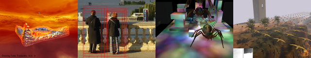

CIS 565: GPU Programming and Architecture
Spring 2012
University of Pennsylvania
Computer Graphics @ Penn


Course Overview | Schedule | Previous semesters
CIS 565: GPU Programming and ArchitectureSpring 2012
University of Pennsylvania |
|
|
Course Overview | Schedule | Previous semesters |
| Date | Topic | Lecturer | Student Presentation | Homework | Reading |
| Wednesday, 01/11 | Course overview | Patrick | |||
| Monday, 01/16 | No class. MLK Day. | ||||
| Wednesday, 01/18 | CPU architecture review | Varun | |||
| Monday, 01/23 | GPU architecture overview | Patrick | HW 1. CPU and GPU Architecture | PMPP Chapter 1 | |
| Wednesday, 01/25 | Introduction to CUDA | Patrick | PMPP Chapter 3 | ||
| Monday, 01/30 | Introduction to CUDA | Patrick | H1 due HW 2. CUDA development | PMPP Chapters 4 and 5 | |
| Wednesday, 02/01 | Parallel Algorithms | Patrick | Presentation Topics | Parallel Prefix Sum (Scan) with CUDA | |
| Monday, 02/06 |
Parallel Algorithms
CUDA Performance | Patrick | Presentation Topics due 02/07 | PMPP Chapter 6 | |
| Wednesday, 02/08 | CUDA Performance | Varun | |||
| Monday, 02/13 | GPU Search and Map Reduce | Guest lecture: Tim Kaldewey | HW 2 due HW 3. CUDA Performance |
Handed out in class | |
| Wednesday, 02/15 | GPU Computing Tools | Varun | |||
| Monday, 02/20 | Graphics Pipeline | Patrick | |||
| Wednesday, 02/22 | Graphics Pipeline | Patrick | |||
| Monday, 02/27 | Project kickoff | Patrick |
GPU Ocelot Dynamic Compilation Framework
Spatial Data Structures | HW3 due Project release | |
| Wednesday, 02/29 | Graphics Pipeline | Patrick |
Monte Carlo simulations on the GPU
OpenGL 4 and Tessellation Shaders | ||
| Monday, 03/05 | No class. Spring Break. | ||||
| Wednesday, 03/07 | No class. Spring Break. | ||||
| Monday, 03/12 | Project Pitches | Project pitch due | |||
| Wednesday, 03/14 | Introduction to GLSL | Patrick |
Computational Finance
Noise | ||
| Monday, 03/19 | Introduction to OpenGL | Patrick |
Video Encode/Decode
Game Console Architectures | HW4. Globe shading | |
| Wednesday, 03/21 | Introduction to OpenGL | Patrick |
Artificial Intelligence
Anti-Aliasing | OpenGL Insights Chapter 28 | |
| Monday, 03/26 | Fundamental Real-Time Shading Algorithms | Patrick |
Collision Detection
Relief Mapping | ||
| Wednesday, 03/28 | Screen-Space and Deferred Shading | Patrick |
Cryptography
Non-Photorealistic Rendering | ||
| Monday, 04/02 | Project Midpoint Presentations | Project midpoint due HW4 due HW5. Deferred shading | |||
| Wednesday, 04/04 | WebGL | Patrick |
Computer Vision
Skin Rendering | OpenGL Insights Chapters 3 and 39 | |
| Monday, 04/09 | WebGL | Patrick |
GPU-Accelerated Kinect Processing
Fluid Simulation and Rendering | ||
| Wednesday, 04/11 | Mobile GPUs | Varun |
GPU Ray Tracing
Alternative Rendering Pipelines | ||
| Monday, 04/16 | Mobile Graphics | Patrick |
Volume Rendering
Path Planning on the GPU | HW5 due | OpenGL Insights Chapters 22 and 23 |
| Wednesday, 04/18 | Current NVIDIA, AMD, and Intel architectures | Varun | PMPP Chapter 12 | ||
| Monday, 04/23 | Final Project Presentations | Project due | |||
| TBA | Project demo | ||||
| TBA | Final |